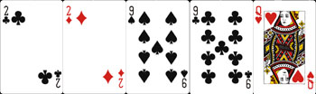
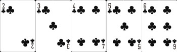

...同じ数字のカードが2枚そろっている状態。

◊ ノーペア(ブタ)
...何もそろっていない状態。その場合一番数字の大きいカードを持っている人の勝利となる。
Aが一番強く、次にK、Q、J、10の順となっている。一番弱いのは2。
◊ ワンペア
...同じ数字のカードが2枚そろっている状態。
◊ ツーペア
...同じ数字のカードが2枚ずつある状態。ワンペアが2つ。

◊ スリーカード
...同じ数字のカードが3枚ある状態。
◊ ストレート
...数字が順番に並んでいる状態。特例として『A』のみ『10-J-Q-K-A』と『A-2-3-4-5』の2つの
パターンで使用できるが、『Q-K-A-2-3』のように上と下を繋げて使用することは不可。
◊ フラッシュ
...同じマークが5枚ある状態。
◊ フルハウス
...同じ数字のカード2枚と、同じ数字のカード3枚の組み合わせ。
ワンペア＋スリーオブアカインド。
◊ フォーカード
...同じ数字のカードが4枚ある状態。
◊ ストレートフラッシュ
...数字が順番に並んでいて、さらにマークも同じという滅多に出ない最強の手役。
中でも一番数字の大きい『10-J-Q-K-A』の組み合わせは『ロイヤルストレートフラッシュ』と呼ばれる。

これを覚えてあなたもポカマス！！